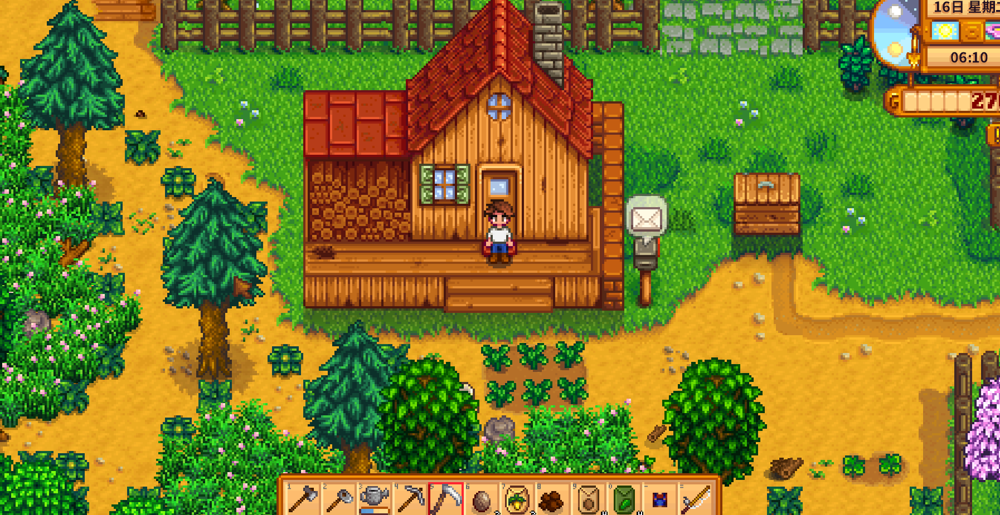
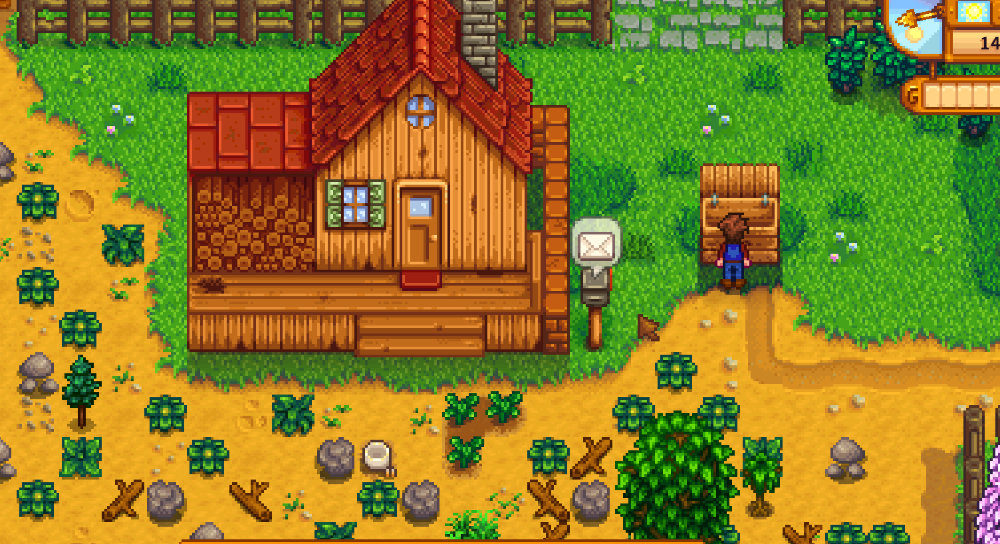
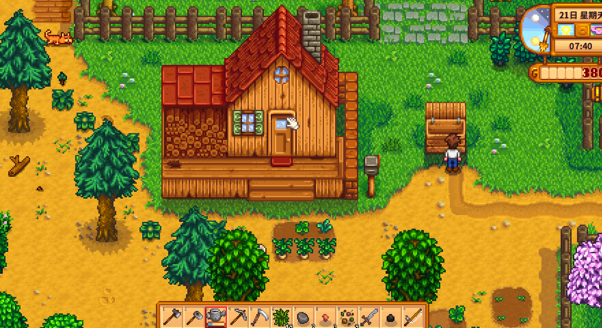

Quick answers (read this first)
- Check the mailbox when the envelope icon appears.
- Optional: watch TV for weather / fortune to plan rain fishing or mine days.
- Sunny = water crops first. Rain = skip watering.
- Ship clear extras in the bin; chest maybes.
- Pick one afternoon hobby (town, mines, fish, festival prep)—not all four.
Who this is for (and who should skip)
Use this if every day feels chaotic, you forget watering, or you leave the house at 6am and never return until 1am Exhausted. A fixed morning script turns Stardew from overwhelming open world into a calm daily loop you can repeat until it sticks.
Skip or skim if your mornings are already automatic. This is training wheels for Year 1—not a rigid schedule for players who finish chores without thinking.
Version note (Stardew Valley 1.6): TV channel names and fortune text vary by localization, but weather forecasting still works the same way. Stardew 1.6 adds broader accessibility and input options that make inventory and menu flow smoother; the habit—mail, water, one goal—matters more than memorizing channel jokes.
From our Year 1 save (real pitfalls): mail first, then TV weather, then water—stick to that order until it is muscle memory. Do not skip watering on sunny days because you “will come back later.” Later usually means dead crops.
Pros & cons of a fixed morning script
| Details | |
|---|---|
| Pros | Fewer dead crops; fewer surprise quests missed; calmer afternoons; easier to teach friends co-op rules. |
| Cons | Feels slow compared to freeform exploration videos; less spontaneous wandering. |
| Use when | First season or after a few fainting deaths. |
| Skip when | You already finish chores without a written list. |
Morning depth comparison: minimal vs standard vs social
| Routine | Steps | Best when |
|---|---|---|
| Speed minimal | Water → leave (TV only if unsure about rain) | Crop crisis weeks; recovery days |
| Standard Year 1 | Mail → TV → water → pet → ship → one goal | Most first-season saves |
| Social mornings | Standard plus two villager talks before leaving | Friendship-focused runs |
| Recovery day | Mail → water → ship → early sleep | After pass-out or Exhausted day |
Personal tips from our Year 1 save
We built the loop around one farm corner—screenshot 21 shows house, bin, and patch in one glance. Screenshot 11 taught us to read mail when the envelope appears. Screenshot 39’s TV check planned rain mining vs sunny errands. We shipped extras at screenshot 5’s bin and gave afternoons one goal only.
Interactive checklist
Tick as you play. Saved in this browser only.
Safe to skip some mornings
- TV, if you do not care about weather planning.
- Town visits on days you only need to stabilize crops.
- Fishing practice when energy is already thin.
- Clearing the entire farm before noon.
Decision table: afternoon after chores
| Day type | Good afternoon | Skip |
|---|---|---|
| Sunny, full energy | Town errands or short mines | Starting both mines and ocean fishing |
| Rainy | Mines or fishing practice | Worrying about watering |
| Festival mail day | Attend after watering | Ignoring the time window |
| Low energy / no food | Ship + sleep early | Heroic beach sessions |
| Tool at Clint’s (no can) | Mines, forage, or town | Expanding crop patch until can returns |
Real screenshots from our Year 1 save

Game screenshot © ConcernedApe — used for guide commentary

Game screenshot © ConcernedApe — used for guide commentary

Game screenshot © ConcernedApe — used for guide commentary

Game screenshot © ConcernedApe — used for guide commentary
How to run the morning (operations)
- Wake; read HUD weather. Sun = water today; rain = skip watering.
- Mailbox if the letter icon shows. Festivals and quests hide there.
- Optional TV for tomorrow’s weather. Skip when you already know.
- Water every crop tile on sunny days. Shrink the patch if this takes too long.
- Pet the animal if present.
- Ship sellables; chest maybes; trash junk. Free at least one slot.
- Snack on hotbar; pick one afternoon goal. Mines, fish, town, or clearing—not all.
- Return with energy left; sleep on purpose.
Common mistakes
- Leaving without watering on sunny days. Classic Year 1 crop funeral. Water first, adventure second.
- Ignoring mail for a week. Festivals, quests, and recipe unlocks hide in letters. Mail is step two, not someday.
- Three afternoon goals. Mines plus fishing plus town guarantees an Exhausted ending. One goal protects energy.
- No snack packed before leaving. Saloon panic later costs time and gold. One edible on the hotbar fixes most emergencies.
- Staying out until 1:50am. Sleep earlier; progress keeps. Pass-outs waste gold and feel worse than stopping on time.
Alternative variations
- Speed mornings: Water → leave. TV only when rain decisions matter. Best during crop recovery weeks.
- Social mornings: After chores, talk to two villagers max before your one afternoon goal. Friendship without all-day town tours.
- Recovery day: After a faint, chores plus early sleep only—no mines, no heroic fishing. Reset the loop before pushing again.
FAQ
Do I have to watch TV every day?
No. Useful for planning rain versus sun, not mandatory. Skip it when you already know tomorrow’s weather or do not care.
What if I miss watering once?
Crops can take damage or die if neglected repeatedly. Shrink the patch so mornings stay realistic rather than hoping you remember tomorrow.
How does this tie to other guides?
Energy, money, mines, fishing, inventory, and sleep plug into this morning base as afternoon modules. Master the script first, then add complexity.
Should I water before or after mail?
Mail first—it takes seconds and prevents forgotten festival days. Water immediately after on sunny mornings before you leave the farm.
What about coop multiplayer mornings?
Same rules per player: whoever owns crops waters on sun. Split afternoon goals so two players do not duplicate the same mine run unless intentional.
Next steps / related pages
Unofficial fan guide. Not affiliated with ConcernedApe.